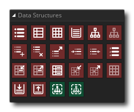

Dans les jeux, vous avez souvent besoin de stocker des informations de manière précise et ordonnée. Par exemple, vous devrez peut-être stocker des listes d'éléments qu'une personne porte ou vous pouvez stocker une grille de lieux qui doivent encore être visités. Maintenant, vous pouvez utiliser plusieurs variables pour cela, mais si vous voulez faire des opérations plus compliquées, comme le tri des données ou la recherche d'un élément particulier, vous devez écrire de gros blocs de code d'action qui peut être lent à exécuter, difficile à débogage et une vraie douleur à écrire!
Pour y remédier, GameMaker Studio 2 dispose d'un certain nombre de structures de données intégrées accessibles via des fonctions spécialisées. Il y a quatre types de structure de données disponibles par glisser-déposer (il y en a six si vous utilisez GML ), chacun ayant ses propres avantages et inconvénients selon le type d'information que vous cherchez à stocker et comment vous souhaitez le manipuler plus tard - les quatre types sont:
Listes Une liste est une structure de données qui stocke des informations de manière séquentielle à mesure qu'elles sont ajoutées. Les index de liste commencent à 0 et augmentent pour chaque élément ajouté à la fin de la liste, bien que vous puissiez également insérer des données dans une position autre que la dernière. Contrairement à la structure de données Stack (expliquée ci-dessous), vous pouvez accéder aux données à partir de n'importe quel index de la liste à tout moment. Plans La structure de données cartographiques est particulièrement utile car elle permet de stocker des paires de clés et de valeurs. Par exemple, un personnage dans votre jeu peut avoir une quantité d'objets différents (clés) et pour chaque objet il peut en avoir plusieurs (valeurs), comme dans un RPG où vous pouvez avoir 10 potions de santé, 5 potions de mana et 100 pièces d'or. Les cartes maintiennent toutes ces paires au même endroit et vous pouvez ajouter des paires à la carte et rechercher la valeur correspondant à certaines touches en utilisant des fonctions simples. Les cartes ne sont pas triées de manière (reconnaissable), ce qui signifie que pour trouver une certaine clé, vous pouvez parcourir toute l'affaire (ce qui est très lent), et il n'y a pas moyen de maintenir deux clés identiques, ni pouvez-vous attribuer une clé deux valeurs. Grilles Une grille est un tableau de valeurs bidimensionnel où vous définissez sa largeur et sa hauteur. Ceci définit le nombre total de "cellules" de la grille dans la grille (la largeur et la hauteur sont multipliées) et ces cellules sont ensuite utilisées pour contenir différentes valeurs de données, qui peuvent être l'un des types de données autorisés. Ce type de structure vous permet de définir et de récupérer la valeur des cellules de la grille en lui attribuant la position x (colonne) et y (rangée) (les lignes et les colonnes commencent à 0 et vont jusqu'à la largeur de la grille - 1 et la hauteur de la grille -1). Lorsque vous accédez à des structures de données de grille, vous devez toujours essayer d'utiliser des valeurs entières pour la position de cellule, et tous les index non entiers seront GameMaker Studio 2 par GameMaker Studio 2 si vous ne le faites pas. Si ce n'est pas ce dont vous avez besoin, alors vous devrez faire l'arrondi vous-même avant de passer l'index que vous souhaitez vérifier. Piles Une structure de données de pile est une structure dite de dernier entré, premier sorti (LIFO). Vous pouvez placer des valeurs sur une pile et les supprimer à nouveau en les sortant de la pile, et la valeur qui a été la plus récemment poussée sur la pile est la première à en être retirée (pensez à une pile de pièces, chacune pièce que vous ajoutez doit être retirée à nouveau avant que vous puissiez obtenir le reste des pièces ci-dessous). Les piles sont souvent utilisées lorsqu'il y a des interruptions à gérer, ou lorsque vous avez des fonctions récursives, ou même lorsque vous construisez une IA rudimentaire pour vos jeux.


Essentiellement, toutes les structures de données fonctionnent de la même manière: vous créez une structure de données et stockez sa valeur d'index dans une variable. Vous utilisez ensuite cet index pour référencer la structure de données dans tous les autres appels de fonction pouvant effectuer des opérations sur celui-ci. Enfin, une fois que vous avez terminé, vous détruisez à nouveau la structure de données pour l'enlever de la mémoire. Vous pouvez utiliser autant de structures en même temps que vous le souhaitez, et toutes les structures peuvent stocker à la fois des chaînes et des valeurs réelles.
La bibliothèque de structure de données a les actions suivantes: